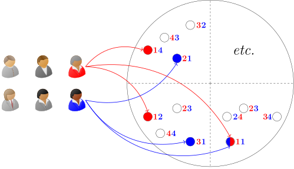

Bubbles and the Value of Innovation (with Valentin Haddad and Paul Ho) Journal of Financial Economics, July 2022, 145:1, Editor's Choice First version: December 2017 This version: February 2022 Download the paper Download the appendix for the paper
Abstract: Booming innovation often coincides with intense speculation in financial markets. Using over a million patents, we document two ways the market valuation of innovation and its economic impact become disconnected during bubbles. Specifically, an innovation raises the stock price of its creator by 40% more than is justified by future outcomes. In contrast, competitors’ stock prices move little despite their profits suffering. We develop a theory of investor disagreement about which firms will succeed that reconciles both the facts, unlike existing models of bubbles. Optimal innovation policy during bubbles must account for the disconnect.

Repository for the replication code Official JFE Version Bibtex file This paper has been presented under the titles - Optimal Firm Creation with Speculation - Efficient Bubbles?
Blog post for the UCLA Anderson Review Blog post for the Carlson School Discovery Magazine
Home